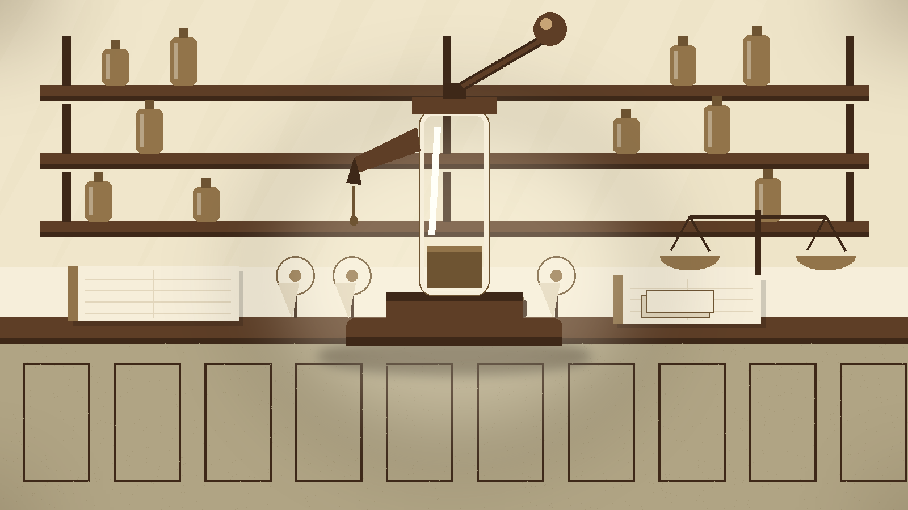
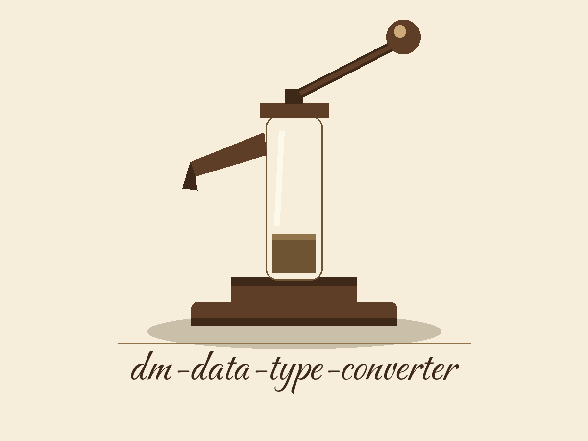
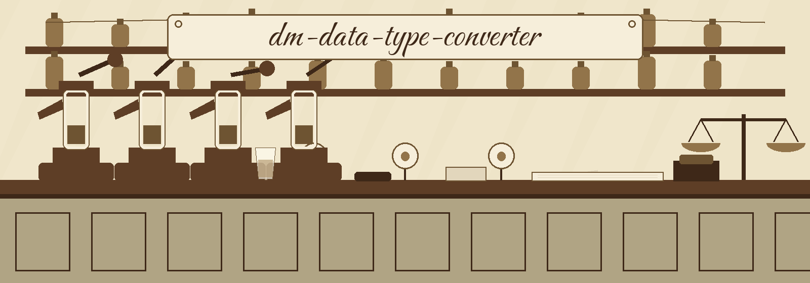
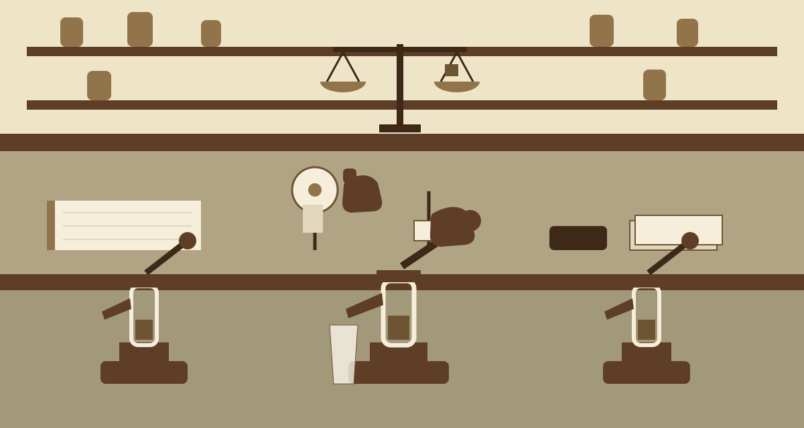

DAY BOOK, FOUNTAIN COUNTER
dm-data-type-converter: Soda Jerk's Syrup Pump Orchestra
The nameplate rule at this counter: repository wording first, theme wording second, joined exactly as the title above reads. The page is ruled into columns like a day book. Every plate is entered in its turn and ruled off before the next one starts.


Plate One: The Pour
This tool converts data from one format to another, and the original value is obscured through that journey. Ingredients never reach the glass in shelf form here either: syrup leaves the barrel as a measure, soda strikes it, and the finished glass resembles none of its parts.
Two Named Conversions
- Integers become hexadecimal representations: the same quantity, wearing another costume.
- Strings become base64 encoded values: the same letters inside, with no letters showing.
The program can also randomly select from a set of conversion methods. That is the house choice, poured by the jerk on duty.
Closing line of this plate, kept in the family wording: tools designed to generate or mask sensitive data with realistic-looking but meaningless values are the family this counter belongs to.
This site prints no concrete data value anywhere: no converted figure, no encoded string, and no value lifted from anybody's data, here or on any plate below.
The card is a counter fixture. It pours nothing by itself, and its field carries no method list, because the record this page follows lists no set.


Plate Two: Fetching the Stock
Soda jerks fetch stock before opening. Fetch the code the same way, from the hyphenated organisation:
git clone https://github.com/ShadowGuard-AI/dm-data-type-converter
CORRECTION, LABELLED AS A CORRECTION
The clone address printed in the README belongs under a predecessor organisation. Followed literally, it reaches the wrong house. The line above is the corrected wording for today, and it is labelled as a correction rather than dressed up as original phrasing. The README keepsake further down this page keeps the older address untouched.
Plate Three: The Order Line
One line orders everything, and this plate halts at its silhouette:
./dm-data-type-converter [params]
The program leads and bracketed parameters trail. The source offers no worked calls, so this plate's sample line stays empty instead of being padded with fabricated conversions for show.

STAMP PAD MARKER, TWINE
Plate Four: The Controls, Both of Them
The control list follows the README sequence, and it is the shortest list on this page. Two entries, served in order:
-h: Show help message and exit. Help opens the list: the flag shows the help message, then exits.-m: No description provided.
One Flag, No Description
The -m flag carries NO DESCRIPTION. The source wording admits that no description was provided, and that missing description is repeated here as a hole, at full size.
Guessing what -m selects is forbidden at this counter. The description mentions conversion method sets and random selection, but the source never fastens this flag to that sentence, so no guess is printed on this plate, however it might be garnished. What the flag selects, what choices it takes, and what it defaults toward all stay unconfirmed.
Plate Five: The Bare Counter
Every pump on this counter gets shaken, and this plate reports which ones cough air. The honest photograph is a bare counter:
There is NO INPUT CONTROL and NO OUTPUT CONTROL in the record, and NO GUARD PARAGRAPH anywhere.
- Refusals when outputs collide with inputs: unprinted.
- Behaviour when runs end, succeed, or stumble: unprinted.
- House rules about files at all: unprinted.
- Entry routes and exit destinations: undocumented.
This plate invents no bouncer the README never hired. Its one honest serving stays conversion: stuff arriving shaped one way, departing shaped another, originals camouflaged by the costume swap.
STAMP PAD MARKER, TWINE
Plate Six: Two Bottles on the Back Shelf
Two bottles stand apart on the back shelf, labels outward, daylight between them.
Left bottle: the repository LICENSE, under MIT terms, filed at the repository root and spanning 2025 to 2026. Its holder is described by outline only, never transcribed: a pen name opening, then a bracketed given name compressed toward a single initial, then a handle in parentheses closing. Anyone reusing the conversion recipes should name this bottle.
Right bottle, with a red correction ribbon tied round its neck: the README's parting line, respelled into today's hyphenated organisation, reads Copyright (c) ShadowGuard-AI.
CORRECTION, LABELLED AS A CORRECTION The published original poured that line under the predecessor name. The respelled line above is a correction made on this website only. In the keepsake record at the foot of this page, the original line stands untouched.

Plate Seven: Last Orders
Last orders at this fountain follow a ritual copied by no sibling site. Search engine arrivals claim counter stools and receive single glasses sequentially. Trays of everything are banned. One order is taken, one order is filled, and pump handles return to rest before the next order is called.
- Example hunters receive both named conversions, poured gradually, sequence preserved: integers rendered as hexadecimal representations, and strings as base64 encoded values.
- Chance hunters receive the random selection glasses: the program can randomly select from conversion method sets, in the description's own vocabulary, alongside the honest acknowledgement that the sets themselves are listed nowhere in the source.
- Control hunters receive the menu's shortest order, garnish free: help, plus the undescribed
-m, with no stories fabricated to cover its missing description.
Regulars, students between classes, and analysts clutching wrongly formed values while facing departing trains all get the same counter discipline. Glassware catches the light, ticket spikes accumulate, wrist flicks finish the pours.
The Fountain Record, Verbatim
The live README, kept whole and untouched, faults and all:
 # dm-data-type-converter Converts data from one format to another to obscure the original value. For example, converts integers to hexadecimal representations, or strings to base64 encoded values. Can also randomly select from a set of conversion methods. - Focused on Tools designed to generate or mask sensitive data with realistic-looking but meaningless values ## Install `git clone https://github.com/ShadowStrikeHQ/dm-data-type-converter` ## Usage `./dm-data-type-converter [params]` ## Parameters - `-h`: Show help message and exit - `-m`: No description provided ## License Copyright (c) ShadowStrikeHQ